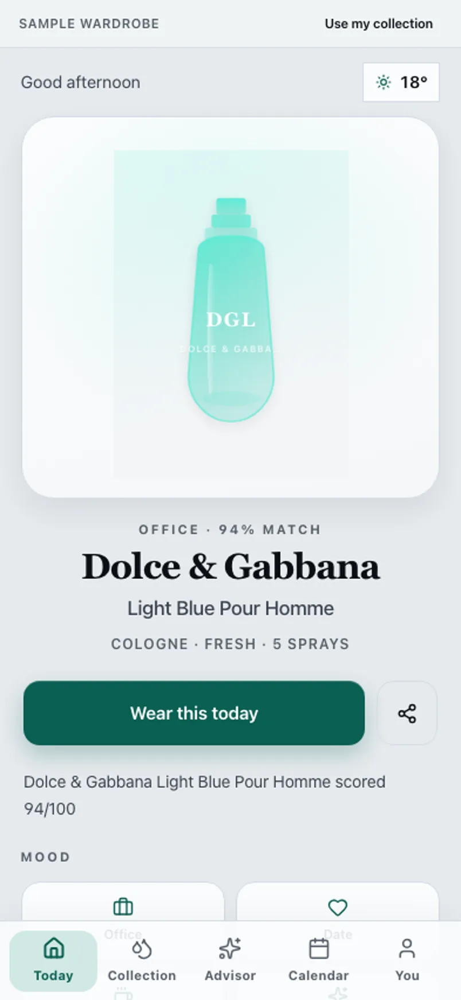

Illustrative story Illustrative story. People and data are fictional.
ScentCap · London, UK
How James stopped losing decants
James logs decants on phone, collection on iPad, analytics on laptop.
“The decant has a home now.”

Before and after
Made-up numbers for a fictional week — not a real customer case.
Before
After ScentCap
A fictional day with James
Sample screens for the story — not a recorded real session.
-
Add decant
Before the commute James adds a decant on his phone so it has a home — not another orphan vial in the desk drawer.
-
Collection iPad
Lunchtime iPad collection view shows what he actually owns versus what he thinks he owns.
-
Analytics laptop
Laptop analytics are illustrative only; he uses them to notice gaps, not to chase a score.
-
Advisor
Rules-based advisor tips on the laptop — not magic, just cues he can dismiss without guilt.
-
Phone check
Phone Today for tomorrow’s wear. The decant finally has a row in the catalogue.
Watch it
A day across devices — silent walkthrough with captions. No autoplay with sound.
Read transcript
James logs on phone, collection on iPad, analytics on laptop. Fictional.
Features James uses
Illustrative story. People and data are fictional.